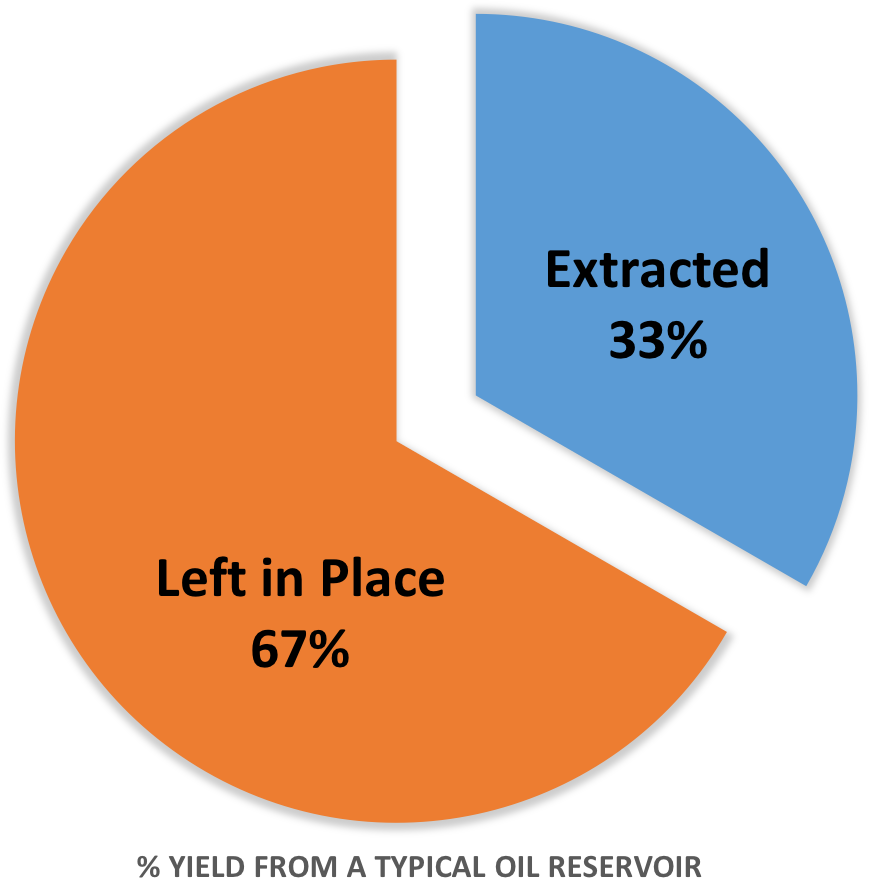
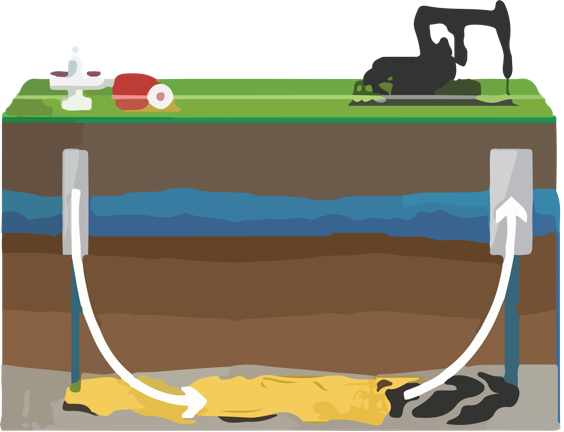
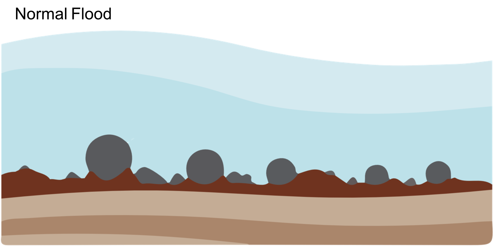
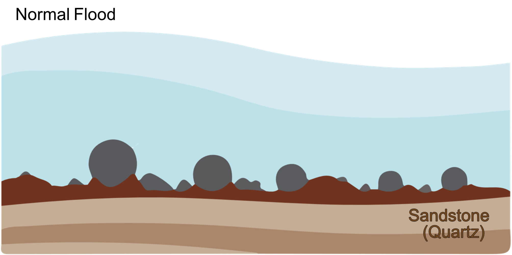
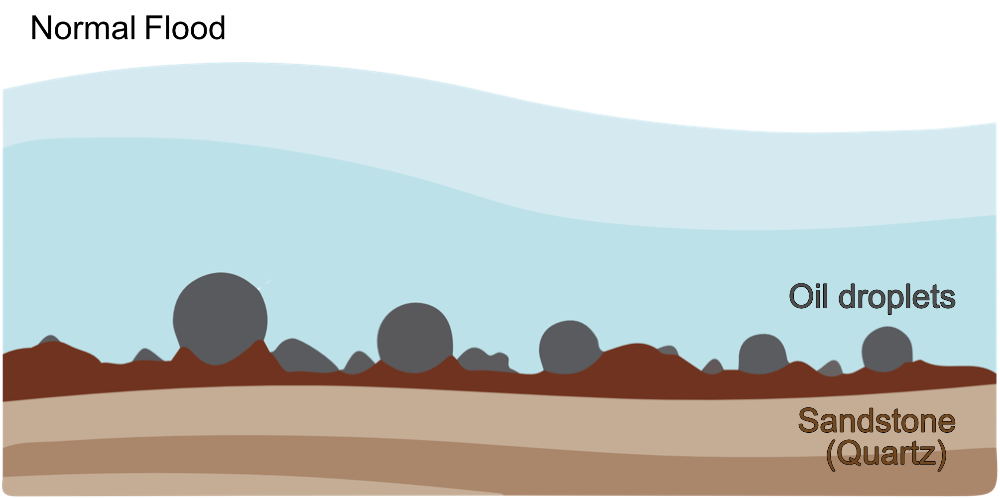
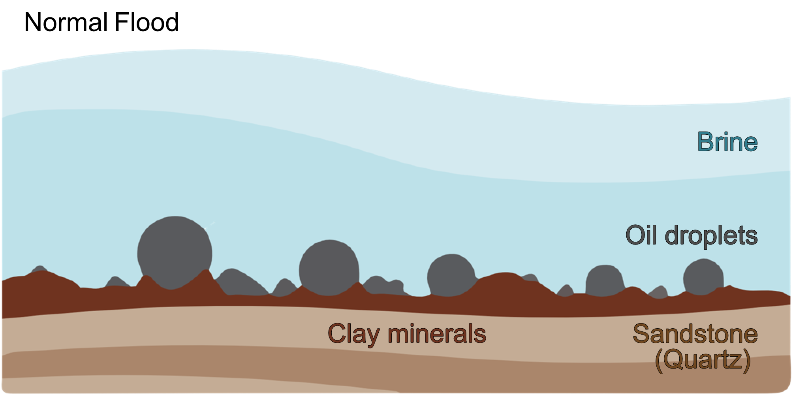
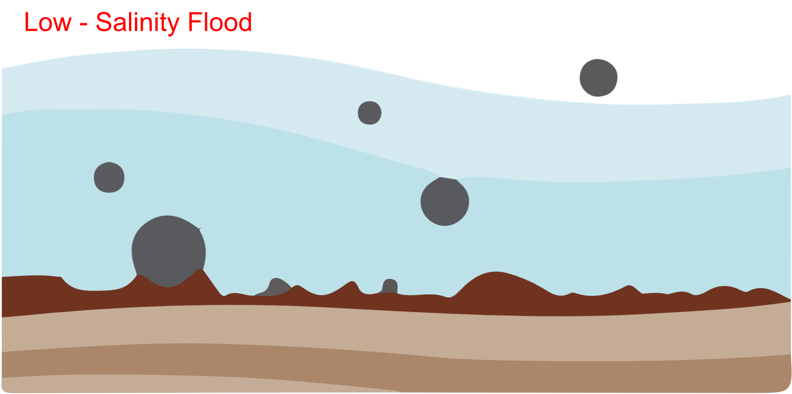
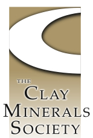
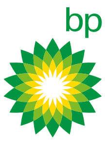

Enhancing Oil Recovery
MD Simulations of Low-Salinity Enhanced Oil Recovery
Tom Underwood
CMS 2016
This Presentation
A brief introduction to...
- Low-salinity enhanced oil recovery.
- The role of clay minerals.
- Some cool results.
- Some conclusions and questions.
Global Energy Demand
By the year 2035 it is predicted that worldwide energy consumption will have increased by approximately 35%.

Current oil extraction methods only recover approximately a third of the oil within a reservoir.
Optimising oil extraction rates is a big problem!
A Possible Solution...
Enhanced oil recovery (EOR) is a technique used to improve the oil output from a reservoir.

Using a flooding fluid with lower salinity (compared to seawater) has been shown to improve oil extraction rates, hence low-salinity EOR.
How we think it works...

How we think it works...

How we think it works...

How we think it works...

How we think it works...

Research Questions
Low-salinity EOR works, but the fundamental mechanisms are not well understood.
Can we use simulations to aid our understanding of low-salinity EOR?
Can we use simulations to help suggest any future experiments?
Can our results help increase oil extraction yield?
What do we know...
There are several conditions required for low-salinity EOR:
- A low-salinity flood!
- Divalent cations in formation water.
- Polar components in the oil.
- The presence of clay minerals.
Part 1: let us examine...
- A low-salinity flood!
- Divalent cations in formation water.
- Polar components in the oil.
- The presence of clay minerals.
Montmorillonite and Decane
What do the simulations tell us...
...about the presence of clay minerals.
- Different clays have vastly different properties.
- Highly charged clays are not a major player in Low-Sal EOR.
- This agrees with recent experimental results.
Part 2: let us examine...
- A low-salinity flood!
- Divalent cations in formation water.
- Polar components in the oil.
- The presence of clay minerals.
Montmorillonite and Decanoic Acid
...but wait...
- A low-salinity flood!
- Divalent cations in formation water.
- Polar components in the oil.
- The presence of clay minerals.
What about divalent cations?
What do the simulations tell us...
...about the polar components in the oil.
- Polar oil components can interact with clay minerals.
- Cation bridging is observed with divalent ions.
- We must consider pH to fully understand EOR.
Part 3: let us examine...
- A low-salinity flood!
- Divalent cations in formation water.
- Polar components in the oil.
- The presence of clay minerals.
What about salt concentration?
What do the simulations tell us...
...about the salt concentration.
There is no correlation between salt concentrationa and oil-clay interactions at the molecular level.
Is this result suprising?
What else could cause the low-salinity effect?
Overall Conclusions
MD simulations offer an ideal opportunity to interpret the phenomenon of low-salinity EOR at the molecular level.
We have been able to successfully describe some of the experimental observations of low-salinity EOR.
The low-salinity aspect remains elusive however.
I would like to thank...
Prof. Chris Greenwell
Dr. Valentina Erastova
Dr. Pablo Cubillas
Rikan Kareem


Thank you for listening
Any Questions?